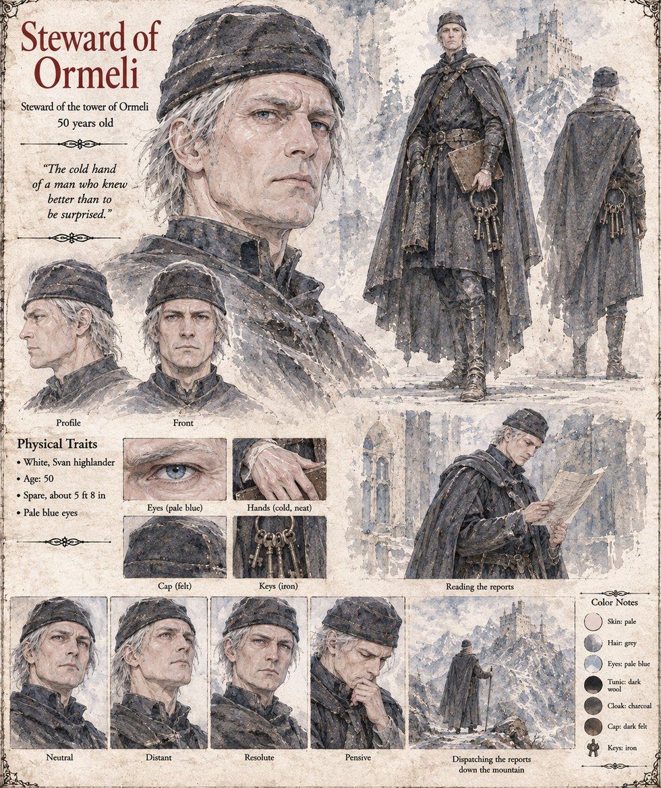

Steward of Ormeli
Steward of the tower of Ormeli · keeper of the Warden’s reports and letters · unnamed · 50 on his sheet
The manuscript never names him. He is her steward, the man at the tower of Ormeli whose work is the Warden’s paper: reports, letters, and the sort of gossip a Warden’s steward is paid to collect. After the first rain, when the barley the rain had saved is cut that same week and threshed by the neighbours, it is he who sends the Warden the weight of it, in the cold hand of a man who knew better than to be surprised: enough, with what the pilgrims’ coin will buy from the plain, for fourteen hundred people until spring. It is the last harvest in the history of the Quiver that cost anyone nothing. The reports that come to him from the plain by way of merchants and drovers, of thin barley after a Mother’s rain, of autumn rains that never came after a Son’s vintage, are the cold light in which Ketevan fills in the third column of her accounts, years after the Portions themselves. When the Hierarchs send her gifts, she returns each in the season it came and tells him that a voice that is for sale is a voice that has already been spent.
He is the one who carries the answer down the mountain on the first of Eldren, the single letter in the small, hard, even hand that says The voice is not for sale. It was never mine to give. It was given to me to hold, and I will hold it, and in the year of the famine he carries three more by the road through Samaghvto, as custom requires of the steward who bears a Warden’s letters to the Sword; each is opened first by the Hierarch of Auron, and filed. In the fortieth year he is the one who finds the ledger on Ketevan’s knee on the highest terrace, in the shade of the fourth wall, and noted that the last line was in her hand and the last column blank, and that the rest of the page had been ruled, with great care, for entries that would not be made.
The manuscript says only her steward across forty years, and does not say whether it is one man. The sheet draws one: age 50, spare, about 5 ft 8 in, pale, narrow face, pale blue eyes, grey hair, cold neat hands, dark wool tunic, charcoal cloak, dark felt cap and a ring of iron keys, with the panels Neutral, Distant, Resolute and Pensive, all its own. Its scenes, Reading the reports and Dispatching the reports down the mountain, follow the manuscript, and so does the line it prints, The cold hand of a man who knew better than to be surprised.
“in the cold hand of a man who knew better than to be surprised”